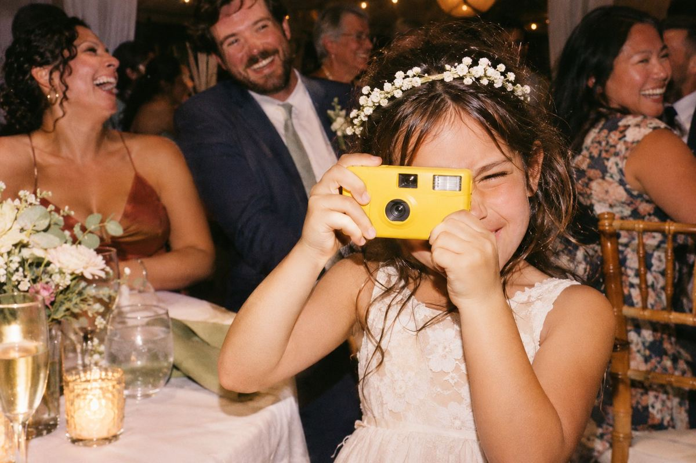
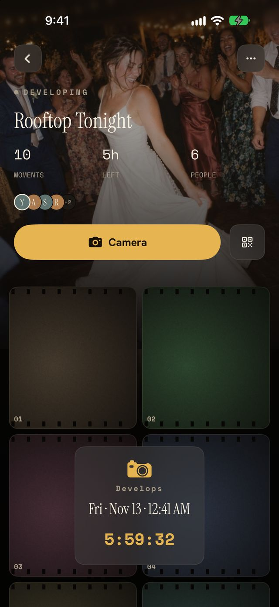

Are Disposable Cameras at Weddings Worth It? Real Costs
Real prices, the flash limit nobody mentions, and when film is still the right call.

Short answer: Disposable cameras at weddings are worth it if you want real film and a stack of imperfect, charming frames, and you can live with the cost, the lost cameras and the wait. As of November 2026, plan on roughly $27 to $36 per camera once developing and scans are included, about $1 to $1.33 per exposure, and one to three weeks after mailing before you see a single photo.
This is the honest math behind disposable cameras at weddings: real prices from retailers and film labs, the flash spec that explains most of the dark photos, and what a 10-camera wedding costs per usable picture. Then the setups that work better for most couples, including a hybrid that keeps a few real cameras on the tables. If you’ve already decided to buy them, our guide to how many disposable cameras you need for a wedding has a chart for 50 to 250 guests.
How much are disposable cameras for a wedding?
Every camera costs you twice: once to buy and once to develop. You don’t take the film out yourself. Both labs below ask you to send the whole camera, and they open it.
Here’s what the pieces cost as of November 2026:
- Cameras: a 10-pack of Kodak FunSaver cameras on Walmart.com, sold by a marketplace seller, was listed at $188.10, about $18.81 a camera, each with 27 exposures of ISO 800 film. A two-pack of Fujifilm QuickSnap cameras sold by Walmart itself was $29.88, or $14.94 each, with 27 exposures of ISO 400 film.
- Developing at Dwayne’s Photo: $7.50 per disposable, plus $4 for standard scans. A shipping and handling charge of $5 for the first roll and $0.50 for each extra covers mailing your negatives back, but you pay the postage to send the cameras in. Its FAQ puts in-lab time at about 12 business days.
- Developing at The Darkroom: $17 per camera, including standard scans to an online gallery and your negatives back. You get a free prepaid label to mail the cameras in, scans go up 2 to 4 days after they arrive, and you pick the return shipping for the negatives at checkout.
- Extras people forget: prints (Dwayne’s adds $5 per set of 4×6 prints), postage to the lab if it isn’t included, themed wraps or labels, and a box to collect the cameras in.
| 10 cameras, priced two ways | Budget | Typical |
|---|---|---|
| Cameras | $149.40 (five QuickSnap two-packs) | $188.10 (FunSaver 10-pack) |
| Develop and standard scans | $124.50 at Dwayne’s, return shipping included, plus postage to the lab | $170 at The Darkroom, free mailing label included |
| Total | About $274 | $358.10 |
| Per camera | About $27.39 | About $35.81 |
| Per exposure (270 frames) | About $1.01 | About $1.33 |
| Scans ready | Around 3 weeks after mailing (12 business days in the lab, plus the post) | 4 to 9 days after mailing (2 to 5 in the post, 2 to 4 in the lab) |
The cheaper lab is also the slower one, which matters if you’d like the photos before the thank-you cards go out.
There’s also a time cost. Someone has to buy and label the cameras, set them out, gather them at the end of the night, then pack and post them. Say two hours in total, usually landing on the couple or a parent in the busiest month of their year.
How many usable photos does a disposable camera give you?
Both the FunSaver and the QuickSnap hold 27 exposures. That’s the ceiling, not the result. Here’s an estimate for a hypothetical 10-camera wedding, so you can see where the frames go. It’s a planning assumption, not a statistic.
- 270 frames on paper: 10 cameras × 27 exposures.
- Say 2 cameras never come back: one leaves in a handbag, one gets cleared away with the centerpieces. You’re at 216 frames.
- Say a third of those miss: too dark, blurred, a thumb over the lens, the ceiling, or the same flower-girl selfie nine times. You’re at about 144 keepers.
- The cost per keeper: at the typical price, $188.10 for cameras plus $136 to develop the 8 that came back is $324.10, or about $2.25 per usable photo.
Your numbers could be better or worse. A bright outdoor reception where someone at each table looks after the camera will beat this. A dim ballroom with the kids in charge of the cameras will not.
Why couples still love disposable cameras at weddings
The case for film is real, and it isn’t only nostalgia.
- It’s actual film. The grain and the slightly-off color come from real chemistry, and you get negatives you can reprint later.
- It’s a prop. A camera on the table starts conversations and gives shy guests something to do with their hands.
- Anyone can use it. No phone, no app, no account. Guests who never take photos on their phone will happily click a plastic camera.
- Kids love them. A child with a camera of their own is a happy child, and they shoot from angles no adult would think of.
- The wait is part of the gift. Opening the scans after the wedding is a second, smaller celebration of the day.

The downsides nobody prints on the box
Read any wedding forum thread on this and the same complaints repeat. Most of them trace back to how these cameras are built.
- The flash reaches about 10 feet. Fujifilm’s spec sheet for the QuickSnap Flash 400 lists an effective flash distance of 3.3 to 10 feet, through a fixed f/10 plastic lens, and Kodak’s description on the FunSaver listing gives 4 to 11.5 feet. The first dance seen from table 12, the band, the sparkler exit from the back of the crowd: all of it tends to come back dark or muddy.
- There’s no screen. A finger over the lens, a flash left off, a group shot with eyes closed: you find out when the scans arrive.
- Cameras disappear. They go home in bags, get thrown out with the table décor, or sit in someone’s car until spring.
- Kids burn whole rolls. A six-year-old can finish 27 exposures on the dessert table in ten minutes.
- Coverage is uneven. One table fills its camera before the salad; another never touches theirs.
- The wait is longer than it looks. Even at a fast lab like The Darkroom, scans take 4 to 9 days from mailing, and the cheaper Dwayne’s takes around three weeks. Add the time the cameras sit in a box until someone posts them, and it can easily stretch to a month.
- No video. No speeches, no first-dance clip, no aunt taking over the dance floor.
Are disposable cameras at weddings worth it for you?
Run your wedding through this quick test. Two or more ticks on the first list and film earns its place.
Worth it if
- Your guest list is small, say 40 or fewer, and you want a handful of real film keepsakes rather than full coverage.
- A lot of the day happens outdoors or in daylight, where a fixed-focus camera does its best work.
- You love film itself, negatives and all, and would happily frame a blurry flash photo.
- Many of your guests rarely use their phones for photos.
- You want an activity for the kids’ table.
Skip them, or buy only a few, if
- Your reception is in a dim room and most of the action is on the dance floor.
- You want photos of everyone, not a sample.
- You want to see the photos the next morning, not next month.
- Your budget is tight. Paying more than $300 for roughly 150 keepers is a lot per picture.
If you buy them: how to get more keepers
Most bad disposable photos are avoidable. These steps fix the common ones.
- Put a one-line card next to every camera. Guests read it, and it doubles as your disposable camera sign.
- Flash on for every shot indoors and after sunset. Then get close: between 4 and 10 feet from the people you’re photographing, the distance both cameras’ flashes cover.
- Give the kids their own cameras. One or two for the kids’ table keeps the adult cameras alive past dinner.
- Put a few cameras where the light is good. Cocktail hour outside, the getting-ready room with big windows, the photo spot by the entrance.
- Name one person to mail them within a week. Better still, ask a friend to cover the developing as their wedding gift, so the scans are waiting when you’re back from the honeymoon.
Snap us! Flash on, stand within 10 feet, then pass the camera on. Drop it in the box by the door when the roll is done.
For the logistics (cameras per table, spares, collection boxes, and a camera captain), see the disposable camera count guide.
Disposable cameras vs a camera app vs both
Here’s how the three setups compare for a hypothetical 100-guest wedding, using the prices above. App figures are Filmsera’s at the time of writing; other apps price differently, and our comparison of disposable camera apps lists them with sources and dates.
| 100 guests | Physical disposables | Shared camera app | Hybrid |
|---|---|---|---|
| What you set up | 10 to 12 cameras, one per table | One shared film, a QR code on each table | 4 film cameras plus one shared film |
| Cost | About $274 to $430 with developing | $24.99 Celebration pass (up to 100 guests); free for up to 10 | About $112 to $128 for four QuickSnaps with developing, plus $24.99 |
| Photos | 27 per camera, minus losses | 12 shots per guest by default, up to 36 | Both |
| When you see them | 1 to 3 weeks after mailing | At the reveal time you set | Both |
| Dark dance floor | Flash reaches about 10 feet | Each guest’s own phone camera | Mixed |
| Lost cameras | Common | Nothing to lose | A few to watch |
| Video | None | Short clips for app guests on Celebration and Wedding films | Some |
| What you keep | Negatives and scans | Files you save to your phone; free films keep photos 30 days after the reveal, passes 1 year | Both |
The hybrid is the quiet winner. Keep four real cameras for specific jobs: the kids’ table, the wedding party, the grandparents and the getting-ready room. Everyone else shoots into one shared roll from their phones. You get a stack of genuine film photos and much wider coverage of the night for roughly $140 to $155, instead of $274 to $430 for film on every table.
The digital version of the wait
The best thing about a disposable camera isn’t the plastic. It’s that nobody sees the photos until the roll comes back. Filmsera for weddings keeps that part and skips the lab.
You create a film in the Filmsera iPhone app, pick when it develops and lock one film look for the whole roll. The Tonight, Tomorrow and In 3 days options all develop at 9 p.m., so for a reveal at the morning-after brunch, choose Custom and set the time. Choose the Disposable look and the roll gets that hard-flash, warm-grain feel, so every guest’s photos match.
Guests scan the QR code on the tables and shoot from their own phones, in the free iPhone app or in any phone’s browser with no app or account. Every photo stays hidden, even from you, until the reveal. Then the whole roll appears at once for everyone in the film, each shot tagged with who took it, and the app builds a short recap reel set to music.

The honest limits: the host needs an iPhone running iOS 17 or later. Guests who join in the browser take photos only; video clips need the app and a Celebration or Wedding film.
It isn’t film, so there are no negatives, and free films keep photos on Filmsera’s servers for 30 days after the reveal, so save the ones you love. Hosting up to 10 guests is free. Bigger weddings use a one-time pass for that film, at the time of writing $24.99 for up to 100 guests or $49.99 for up to 250, and each pass keeps the photos for a year.
Filmsera turns every guest’s phone into a disposable camera that stays sealed until the reveal you choose, and hosting up to 10 guests is free. Get Filmsera on the App Store
Still weighing everything else, from shared albums to upload links? The full guide to collecting photos from wedding guests compares every method side by side, and our explainer on what a digital disposable camera is covers the screenless gadgets too.
FAQ
How much do disposable cameras cost for a wedding?
As of November 2026, a single-use camera costs about $15 to $19 on Walmart.com, and developing with standard scans adds about $12 to $17 per camera at the two mail-in labs we checked. A 10-camera wedding lands around $274 to $358 with developing and scans, or about $1 to $1.33 per exposure. Prints, postage and themed wraps cost extra.
How long does it take to get wedding disposable camera photos back?
About one to three weeks after you mail them, depending on the lab. The Darkroom says mail reaches it in 2 to 5 days and scans go up 2 to 4 days after they arrive. Dwayne’s Photo, the cheaper lab we priced, quotes about 12 business days in the lab. Negatives follow by mail, and the real delay is often the week or two the cameras sit in a box before anyone posts them.
Do disposable cameras work at a dark reception?
Only up close. Fujifilm rates the QuickSnap Flash 400 flash for subjects 3.3 to 10 feet away, through a fixed f/10 lens. Shots of people at the next table or across the dance floor usually come back dark or grainy. Ask guests to keep the flash on indoors and to get within a few steps of whoever they’re photographing.
Can you reuse a disposable camera?
Not in the usual sense. You mail the whole camera to the lab, which takes the film out to develop it, and what comes back is negatives and scans. If you want something reusable on the tables, look at refillable 35mm point-and-shoot cameras, or a shared camera app that runs on guests’ own phones.
What is the best alternative to disposable cameras at a wedding?
For most weddings, a shared camera app that guests open by scanning a QR code. It usually costs less, nothing gets lost, and every photo lands in one place. If your budget is zero, a free shared album works without the reveal. A photo booth covers the group shots, and you can always mix a few real cameras with an app.
Written by the Filmsera team
Filmsera is a shared disposable camera app for iPhone: create a film for your event, let guests join by QR code from the app or their phone's browser, and open the whole roll together at the reveal. Download on the App Store →
Photos in this article are illustrations created for Filmsera, not customer photos. App screenshots are from Filmsera on iPhone.